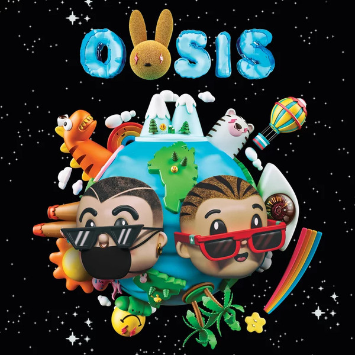

Benito Antonio Martínez Ocasio (born March 10, 1994), known by his stage name Bad Bunny, is a Puerto Rican singer and rapper. His music is often defined as Latin trap and reggaeton, but he has incorporated various other genres into his music, including rock, bachata, and soul. He is also known for his deep, slurred vocal style and his eclectic fashion sense. Throughout his career, Bad Bunny has frequently collaborated with artists such as J Balvin, Ozuna, Farruko, Residente, Arcángel, and Daddy Yankee. Born and raised in the municipality of Vega Baja, Puerto Rico, Bad Bunny gained popularity on SoundCloud and was eventually signed to a record label while working in a supermarket as a bagger and studying at the University of Puerto Rico at Arecibo.
Following the release of his breakthrough single "Diles" in 2016, he collaborated with Cardi B and J Balvin on the Billboard Hot 100 number-one single "I Like It" as well as with Drake on "Mia". His debut album X 100pre was released in December 2018 and was awarded a Latin Grammy for Best Urban Music Album. On June 28, 2019, Bad Bunny released Oasis, a collaborative album with J Balvin. The record contains the singles "Qué Pretendes" and "La Canción". He performed at the Super Bowl LIV featuring Shakira and Jennifer Lopez. On February 29, 2020, he released the album YHLQMDLG — Yo Hago Lo Que Me Da La Gana.
Musical Career
2016–2017: Career beginnings
While working as a bagger at Supermercados Econo in Vega Baja in 2016, Bad Bunny released music as an independent artist on SoundCloud, where his song "Diles" caught the attention of DJ Luian who signed him to his record label, Hear this Music. Since then, he has earned multiple top-ten entries on the US Hot Latin Songs chart. His breakthrough single, "Soy Peor", established him as a forerunner in the Latin American trap scene and reached number 22 on the Hot Latin Songs chart.
In the summer of 2017, Bad Bunny signed a booking deal with Cardenas Marketing Network (CMN) for several Latin American countries. He was featured in Becky G's single "Mayores", released in July 2017. Starting in November 2017, Bad Bunny hosted Beats 1's first Spanish-language show, Trap Kingz. Also in November 2017, Bad Bunny's track, "Tu No Metes Cabra" peaked at number 38 on the Hot Latin Songs chart. The re-mix demanded the release from prison of Anuel AA. At around the same time, the song "Sensualidad," released as a collaboration between Bad Bunny, J Balvin, and Prince Royce, peaked at number 8 on the Hot Latin Songs chart, while the remix of "Te Boté" with Ozuna and Nicky Jam reached number one on that chart. In 2018, Cardi B collaborated with Bad Bunny and J Balvin on the Billboard Hot 100 number-one single, "I Like It". In Cardi B's single, Bad Bunny raps in Spanish, Spanglish, and English. It became Bad Bunny's first number-one single on the US Billboard Hot 100. Then Bad Bunny became "El Conejo Malo".
2018–present: International success
On October 11, 2018, Bad Bunny released "Mia", a collaboration with Drake. It reached number five on the Billboard Hot 100. In November 2018, Bad Bunny released "Te Guste" with Jennifer Lopez, with a video directed by Mike Ho. Bad Bunny released his debut album X 100pre on Christmas Eve 2018 soon after leaving DJ Luian's label "Hear this Music", revealing on an Instagram live stream that he was never allowed to make an album and also confessing that he actually produced his music by himself. He would join Rimas Entertainment as soon as he left "Hear this Music" to release his debut album on December 24, 2018. At Metacritic, which assigns a normalized rating out of 100 to reviews from mainstream critics, X 100pre received an average score of 84 based on five reviews, indicating "universal acclaim". The record contains a variety of musical genres, including pop punk, Andean music, Dominican dembow, and "windswept 80s stadium rock". Alexis Petridis of The Guardian praised Bad Bunny's "off-kilter creativity", opining that Bad Bunny "feels less like part of the current pop landscape than an artist operating slightly adjacent to it. He is separated from the pack as much by a desire to take risks as by his roots."
From March 8–10, 2019, Bad Bunny performed a sold-out weekend concert run at the José Miguel Agrelot Coliseum in San Juan, his debut in Puerto Rico's major entertainment venue. The initial 2-date concert were sold out in a matter of hours, prompting a third date, after much speculation and demand, including specially-priced student tickets.The weekend concert run was themed to '90s Puerto Rican nostalgia through visual elements by local artist and illustrator Sergio Vázquez; the shows also brought back a brief introduction segment featuring the famous '90s late night show No te duermas and its host, Antonio Sánchez "El Gángster". Many guest performers joined Bad Bunny on stage, including Tommy Torres, Becky G, J Balvin, Wisin & Yandel, Ñejo, Arcángel, PJ Sin Suela, El Alfa, Jovani Vázquez, and up-and-coming rapper, Guaynaa.

On June 28, 2019, Bad Bunny released Oasis, an eight-song collaborative album with J Balvin. The record was released overnight and was deemed a "surprise" release. The two artists first met at a J Balvin concert in Puerto Rico, when Bad Bunny was working on releasing music on SoundCloud, and then collaborated on the 2017 track “Si Tu Novio Te Deja Sola”. The chemistry between the two was so strong that they came up with the idea to release a joint album. Oasis peaked at number nine on the Billboard Hot 100 and topped the Billboard US Latin Albums chart. In 2019, Bad Bunny performed on the main stage at Coachella. A protest song, "Afilando los cuchillos" , (in English: Sharpening the knives) with lyrics by Bad Bunny and Residente, was released during the 2019 protests against Ricardo Rosselló. The song garnered 2.5 million views on YouTube within a day of its release. In February 2020, Bad Bunny was a guest performer in the Super Bowl LIV halftime show, headlined by Jennifer Lopez and Shakira.2020: YHLQMDLG
Bad Bunny released the album YHLQMDLG at midnight on February 29, 2020. The album's title stands for "Yo Hago Lo Que Me Da La Gana" (Spanish for "I Do What I Want") and features collaborations with Daddy Yankee, Yaviah, Jowell & Randy, and Ñengo Flow. The album is an homage to the marquesinas (garage parties) Bad Bunny grew up attending, and features many nods to early/mid-2000s reggaeton. On the final song on the album, "< 3", the artist announced his intention to retire after releasing one more album with the lyric "In nine months I'll release another, to retire calmly like Miguel Cotto", referencing the retirement of the Puerto Rican boxer. He noted that the stress of fame has had a negative impact on his mental health. The album debuted at number two on the US Billboard 200, becoming the highest-charting all-Spanish album ever on the chart.

Music Videos
A short playlist of 4 Bad Bunny music videos.


Information gathered from Wikipedia on March 13, 2020 at 9PM PCT